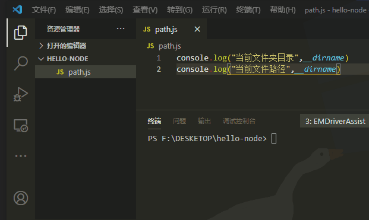
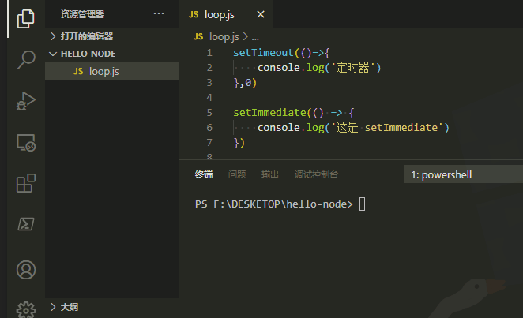
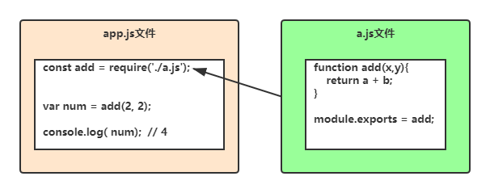

# 全局对象(global)
node 中没有 window 的全局对象，node 中全局的 this 指向 global，global 是一个对象，包含以下模块。
- 打印日志：console
- 文件路径：dirname、filename
- 定时器：setTimeout、setInterval
- 模块化系统：module、exports、require
# 1、路径
在不同环境中,文件的路径表示都不同（windows与linux）。
于是 Node.js 提供了文件路径相关的模块与全局属性。
console.log(__dirname)
// 返回当前文件夹目录，如：
// D:\blog\blog-vp
console.log(__filename)
// 返回文件路径，如：
// D:\blog\blog-vp\app.js

# 2、Event loop
Event loop 也叫事件循环，Node.js 是基于 chrome V8 引擎开发的的，所以 Node.js 也是单线程的，不过事件循环跟浏览器有一点差别。
建议先了解浏览器的时间循环机制（Event loop），要知道这些函数的执行循序。
- setTimeout
- setImmediate
- process.nextTick
- Promise
比如要知道下面例子的执行循序。
setTimeout(()=>{
console.log('定时器')
},0)
setImmediate(() => {
console.log('这是 setImmediate')
})
process.nextTick(()=>{
console.log('nextTick')
})
var p = new Promise((reseve,reject)=>{
console.log('promise')
reseve()
})
p.then(()=>{
console.log('promise then')
})
console.log('开始')
// promise
// 开始
// nextTick
// promise then
// 定时器
// 这是 setImmediate

# 3、模块化系统
模块化是指将一个很多的代码拆分成多多个模块。

图中第一句是在文件 app.js中引入 a.js的文件，用 add 变量来接受。
Node 的模块化是基于 Common.js 规范。
使用方法如下，在 b.js 中使用 a.js 里面的函数。
// a.js
function add(x,y){
return a + b
}
function mul(x,y){
return a * b
}
// 外部需要使用的函数需要输出
module.exports = {
add,
mul
}
// b.js文件
const {add,mul} = require('./a.js')
const sum = add(5,6) // 10
const m = add(5,6) // 30
← 安装 Event loop →